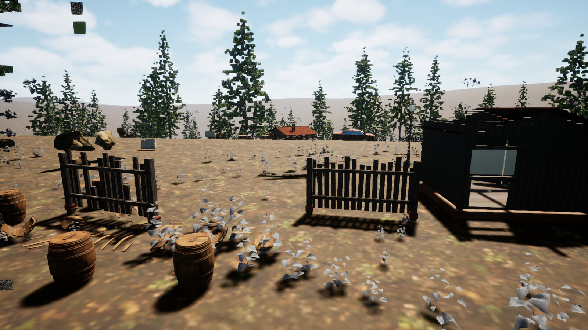
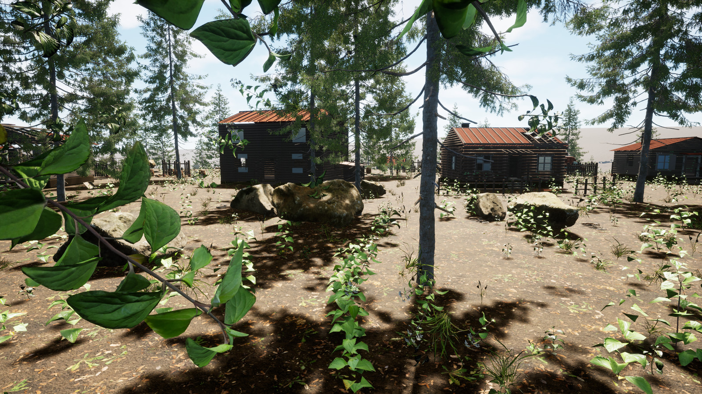
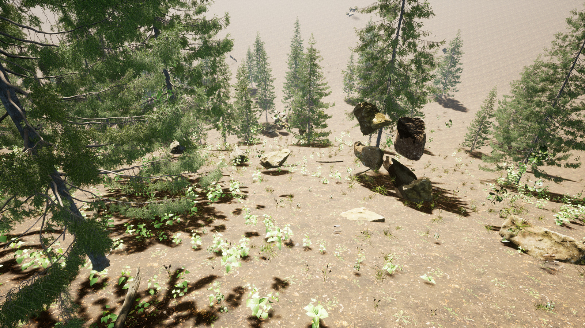
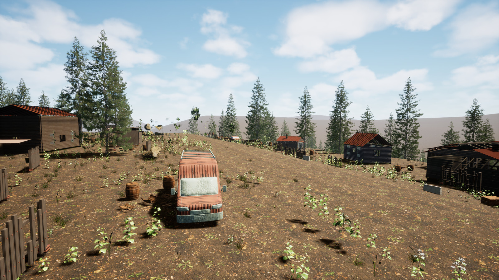

GUSTAVA / ZONA 2040 / GZ315 / Unreal Engine 5.8 / 15 ноября 2026Любич — реальная карта и 4K фотограмметрия
РАБОЧИЙ УРОВЕНЬ · ART REJECTED
Это настоящие 1920×1080 кадры Unreal Engine, здесь уменьшены до 1600×900. Никаких нейросетевых концептов или улучшения изображений.
1. Придорожный участок

Не обработанный скриншот. Виден масштаб деревни, ограждения, реальные объекты и недостатки старой растительности.2. Замшелые камни у домов

Шесть вариантов камней из ранее установленной библиотеки получили официальные 4K CC0 PBR-карты Poly Haven.3. Сухостой и камни на лесном склоне

Кадр для выявления визуальных дефектов. Не заявляется как готовая игровая сцена.4. Весь квартал Любича — вид для сравнения

Прототипная архитектура и пустые склоны остаются на доработке.